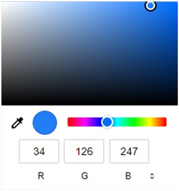

Formlar ulanyjydan alnan maglumatlary web-serwere ibermeklik üçin ulanylýar. Iberilen maglumatlaryň serwer tarapda
nähili görnüşde işlenip taýýarlanjagyny Backend kämilleşdiriji serwer taraply (PHP, C#, Python, Java, Node.js we
ş.m. dillerde) kod ýazmak bilen ýerine ýetirýär. Frontend kämilleşdiriji formlaryň daşky görnüşini taýýarlaýar.
Aşakdaky formuň kömegi bilen web-saýtyň hasaba alynmagy ýola goýulýar:
Formuň kömegi bilen web-saýty hasaba almaklyk
Saýtyň hasaba alynmagy (registrasiýasy)
Ýokardaky formy "form.html" ady bilen ýatda saklap brauzerde açanymyzda: "Ulanyjy ady", "Parol", "Saýtyň URL salgysy",
"Saýtyň beýany" we "Bahalaryň sanawy" ady bilen bäş sany tekst polýasyny, "Saýtyň temasy" ady blen bir sany bahalaryň
sanawyny we üç sany düwmani görüp bileris.
"Faýl saýla" düwmesi saýtyň bannerini faýl görnüşinde kompýuteriň diskinden saýlamaga mümkinçilik berýär. "Poz" düwmesi
formuň elementleriniň başlangyç bahalaryny berýär. "Iber" düwmesi formuň elementlerine ulanyjy tarapyndan girizilen
maglumatlary
form teginiň action atributynda görkezilen web-serwerdaky "file.php" programmasyna iberýär. "file.php" programmasy
maglumatlary işläp taýýarlar we saýtyň üstünlikli ýagdaýda hasaba alnandygy hakynda habar berer. Eger-de ulanyjy
hökmany gutujyklary doldurmadyk bolsa ýa-da ýalňyş dolduran bolsa ýalňyşlyk habarnamasy çykarylar. Biziň mysalymyzda
ulanyjynyň girizen maglumatlaryny işläp taýýarlajak "file.php" programmasy ýazylmadyk. Şonuň üçin maglumatlary iberip
bolmaz we ibermäge synanyşan ýagdaýymyzda brauzer "Faýl tapylmady" ýalňyşlyk habarnamasyny görkezer.
HTML dokumentiň içine form teginiň kömegi bilen formy goşup bolýar. form teginiň içinde dolandyryş elementleri bolan input, textarea we select elementleri bolup biler:
Bu tegleriň her birine aýratynlykda seredip geçeliň.
HTML dokumentiň içine form teginiň kömegi bilen formy goşup bolýar. form teginiň aşakdaky ýaly atributlary bar:
action – formuň iberen maglumatlaryny işläp taýýarlajak programmanyň URL salgysyny bermek.
URL salgy absolýut ýa-da otnositel görnüşde berlip bilner:
method – formuň maglumatlarynyň web-serwere nähili usulda iberiljekdigini kesgitleýär. "GET" ýa-da "POST" bahany alyp biler:
GET – iberiljek maglumatlar URL salgynyň soňuna ? belgisiniň yzyndan goşulyp
iberilýär. Ýazylyş formaty: [elementiň ady]=[elementiň bahasy]. Bu usulda birden köp elementiň bahasy
iberilýän
bolsa, onda element=baha jübütleriniň arasyna & (ampersand) belgisi goýulýar. Mysal üçin:
http://www.mysite.com/file.php?user_id=1578&age=18
Ýörite simwollar we türkmen diliniň elipbiýiniň latyn elipbiýinde bolmaýan harplary "%nn" formatynda kodlanýar,
boşluklaryň deregine bolsa "+" belgisi goýulýar.
form teginde method atributy üçin "GET" baha aşakdaky ýaly
berilýär:
URL salgylaryň uzynlygynyň belli bir çägi bolandygy üçin "GET" usuly iberiljek maglumatlaryň göwrümi uly bolmadyk ýagdaýlarda ulanylýar;
POST – uly göwrümli maglumatlary, faýllary we gizlin maglumatlary (mysal üçin parollary) ibermeklik üçin niýetlenendir:
enctype – iberilýän maglumatlaryň kodlama usulyny berýär. Aşakdaky bahalary alyp biler:
application/x-www-form-urlencoded – kabulgörlen baha hökmünde ulanylýar. Mysal üçin:
multipart/form-data – web-serwere faýllar iberilende ulanylýar. Mysal üçin:
name – formuň adyny bermeklik üçin ulanylýar. Mysal üçin:
autocomplete – formuň içindäki girizme polýalaryna girizilen bahalaryň awtotamamlamasyny açmak ýa-da ýapmak üçin ulanylýar. Bahasyny "on" berenimizde awtotamamlama açylýar, bahasyny "off" berenimizde awtotamamlama ýapylýar. Mysal üçin:
novalidate – eger-de bu atribut ýazylan bolsa, onda girizme polýasyna girizilen maglumatlar barlagdan geçmez. Safari brauzeri bu atributy gollamaýar. Mysal üçin:
input tegi formuň içine dolandyryş elementlerini goýmaga mümkinçilik berýär. Mysal üçin,
tekst polýasy, düwme we ş.m. dolandyryş elementleri hasaplanýar. Bu tegiň aşakdaky ýaly atributlary bar:
type – dolandyryş elementiň görnüşini kesgitlemek üçin ulanylýar. Dolandyryş elementleriniň aşakdaky ýaly görnüşleri bolup biler:
text – tekst girizme polýasy. Mysal üçin:
password – parol üçin niýetlenen tekst girizme polýasy. Girizilen tekst ýyldyzjyklar görnüşinde görkezilýär:
file – faýl saýlama düwmesi. Web-serwere faýl ibermeklik üçin ulanylýar:
checkbox – "bellijek" (ptiçka) goýulýan polýa. Bu polýa bellijegi goýup bolýar ýa-da bellijegi aýyryp bolýar:
radio – radiodüwmejik:
reset – düwme. Bu düwmaniň üstüne basylanda formuň elementleriniň içindäki ähli maglumatlar pozulýar ýa-da has dogrusy formuň ähli elementleri kabulgörlen bahalaryny alýarlar.
submit – düwme. Bu düwmäniň üstüne basylanda forma girizilen ähli maglumatlar web-serwere iberilýär.
button – adaty buýruk düwmesi. Bu düwmelere diňe skript berkidilen ýagdaýynda ulanmaklygyň manysy bar. Düwmelere skritpleriň berkidilişi barada JavaScript bölüminde içgin gürrüň ediler:
image – surat. Bu suratyň üstüne basylanda forma girizilen ähli maglumatlar web-serwere iberilýär. Şol bir wagtyň özünde syçanjygyň kursory arkaly suratyň basylan ýeriniň koordinatalary hem iberilýär. Suratyň ýoly src atributyň kömegi bilen berilýär. action atributynyň kömegi bilen bolsa alternatiw tekst berilýär:
hidden – gizlin element. Bu gizlin elementiň bahasy hem formuň beýleki elementleriniň maglumatlary bilen bilelikde iberilýär. Element ulanyja görkezilmeýär, ýöne, mysal üçin, eger-de ulanyjy birnäçe formy doldurýan bolsa, onda ulanyjynyň öňki dolduran formunyň maglumaty häzirki formuň içindäki bu elementde saklanmagy zerur bolup biler (mysal üçin ulanyjynyň unikal ady):
url – URL salgynyň girizilýän polýasy. Girizilen baha awtomatiki barlanýar. Eger-de bu gutujyga baha girizilmese ýa-da girizilen baha dogry URL bahasyna gabat gelýän bolsa, onda form iberiler. Bahanyň girizilmesini hökmany ýagdaýa getirmek üçin required atributy ýazylmaly:
email – elektron salgynyň girizilýän polýasy. Girizilen baha awtomatiki barlanýar. Eger-de bu gutujyga baha girizilmese ýa-da girizilen baha dogry elektron salgynyň bahasyna gabat gelýän bolsa, onda form iberiler. Bahanyň girizilmesini hökmany ýagdaýa getirmek üçin required atributy ýazylmaly:
tel – telefon belginiň girizilýän polýasy. Girizilen baha awtomatiki barlanmaýar, çünki telefon belgileriň formatlary biri-birinden düýpgöter tapawutlanýarlar:
number – san bahanyň girizilýän polýasy. Polýanyň sagynda brauzer iki sany düwmejigi görkezýär. Bu düwmejikleriň kömegi bilen sanyň bahasyny step atributynda görkezilen ädim bilen artdyryp ýa-da kemeldip bolýar. Girizilen baha awtomatiki barlanýar. Eger-de bu gutujyga baha girizilmese ýa-da girizilen baha položitel ýa-da otrisatel bolsa, onda form iberiler. Bahanyň girizilmesini hökmany ýagdaýa getirmek üçin required atributy ýazylmaly:
range – berlen diapazon boýunça san bahany saýlamaklyk polýasy. Bu element brauzerde markersiz görkezilýär, şonuň üçin bahany takmynan saýlamaly bolýar. Ulanyja diapazondan saýlanan bahany görkezmeklik üçin goşmaja skritp ýazmaly bolýar. Elemente min atributy bilen minimal bahany, max atributy bilen maksimal bahany, value atributy bilen başlangyç bahany, step atributy bilen bolsa ädimi berip bolýar:
color – reňk saýlama polýasy. Elementiň üstüne basylanda reňk palitrasynyň penjiresi görkezilýär (aşakdaky surat). Bu palitranyň kömegi bilen reňki el bilen saýlap bolýar. Başlangyçda saýlanan reňkiň bahasyny value atributyň kömegi bilen berip bolýar:

Reňk palitrasy
search – gözleg gutujygy:
date – senäni girizmek üçin niýetlenen polýa (Firefox we Internet Explorer brauzerleri tarapyndan gollanmaýar):
time – wagty girizmek üçin niýetlenen polýa (Firefox we Internet Explorer brauzerleri tarapyndan gollanmaýar):
datetime-local – ýerli senäni we wagty girizmek üçin niýetlenen polýa (Firefox we Internet Explorer brauzerleri tarapyndan gollanmaýar):
month – aýy we ýyly girizmek üçin niýetlnen polýa (Firefox we Internet Explorer brauzerleri tarapyndan gollanmaýar):
week – hepdäni girizmek üçin niýetlnen polýa (Firefox we Internet Explorer brauzerleri tarapyndan gollanmaýar):
name – dolandyryş elementiň adyny bermek üçin ulanylýar. Dolandyryş elementiň ady hökman latyn harplary bilen berilmeli. Elementiň adynyň başyna san goýmak bolmaýar:
disabled – formuň elementine bolan elýeterliligi çäklendirýär. Eger-de elemente bu atribut ýazylsa, onda element aktiw däl ýagdaýda görkeziler.
readonly – formuň elementiniň diňe okamak üçin niýetlenendigini aňladýar. Eger-de elemente bu atribut ýazylsa, onda elementiň bahasyny üýtgedip bolmaz.
value – formuň elementlerine kabulgörlen bahany bermek ýa-da düwmeleriň ýazgylaryny bermek:
HTML 5 diliniň input teginiň täze atributlary:
autocomplete – girizme polýasynyň girizilen bahasynyň awtotamamlamasyny açmak ýa-da ýapmak üçin ulanylýar. Bahasyny "on" berenimizde awtotamamlama açylýar, bahasyny "off" berenimizde awtotamamlama ýapylýar. Mysal üçin:
autofocus – elemente girizme fokusyny gurnaýar. Sahypa ýüklenende elementiň işjeň ýagdaýda bolmagyna girizme fokusy diýilýär.
placeholder – girizme polýasy doldurylmanka giriziljek maglumat hakynda goşmaça maglumat berýän atribut.
required – eger-de polýa hökmany doldurylmaly bolsa, onda bu atribut ýazylmaly.
pattern – girizilýän bahanyň JavaScript regulýar aňlatma görnüşindäki şablony. Bu elemente girizilen maglumat şablona gabat gelse form tarapyndan iberiler, girizilen maglumat şablona gabat gelmese iberilmez.
form – elementi onuň identifikatory boýunça form bilen baglanyşdyrmak (diňe element formuň daşynda bolsa ulanylýar).
HTML 5 diliniň input teginiň täze atributlary formuň maglumatlary serwere iberilmänkä
girizme polýasyna girizilen bahalary barlagdan geçirýärler, ýagny girizilen bahalar dogry bolan ýagdaýynda, mysal
üçin elektron poçta salgysy dogry girizilen bolsa serwere iberiler, formuň elementleriniň bahasy nädogry girizilen
bolsa ýalňyşlyk habarnamasy görkeziler we formuň maglumatlary serwere iberilmez. Girizilýän maglumatlaryň barlagyny
form teginiň novalidate atributyny ýazmaklyk bilen öçürmeklik
mümkin, ýöne muny etmeklik zerurlygy käbir ýagdaýlarda ýüze çykýar.
Jenaýatçylaryň formdaky HTML kodlaryny üýtgedip biljekdigini nazara almaklyk bilen formuň maglumatlarynyň brauzerde
barlanýandygyna bil baglaman Web-serwerde kabul edilip alnan maglumatlary hökmany suratda serwer programmalaryň
kömegi bilen barlagdan geçirmeli. Elbetde formuň maglumatlarynyň müşderi tarap bolan brauzerde barlanmagy
web-serweriň ýüküni azaldar. Şonuň üçin forma girizilen maglumatlaryň müşderi kompýuterde barlanmagynyň peýdalary
bar hem bolsa maglumatlary hem brauzerde, hem web-serwerde serwer programmalaryň kömegi bilen barlamaklyk maslahat
berilýär.
Indi bolsa, aýratyn elementlere mahsus bolan atributlara seredip geçeliň.
Bellijek gutujygy üçin aşakdaky atributlar ulanylýar:
value – eger-de gutujyk bellenen bolsa, onda bu atributa berlen baha web-serwere iberiler. Gutujyk bellenmedik bolsa bu atributa berlen baha web-serwere ugradylmaz. Eger-de bu atributyň bahasy berilmedik bolsa, onda bu atributyň kabulgörlen bahasy bolan "on" ulanylar:
Bellijek gutujyklarynyň toparyny hem ulanmaklyk mümkin. Munuň üçin ähli bellijek gutujyklarynyň adyny, ýagny name atirbutyna birmeňzeş at bermeli. Web-serwerde bellijek gutujyklarynyň toparyna degişli ähli maglumatlary almaklyk üçin gutujygyň adyndan soňra kwadrat ýaýlary goýmaly (bu ýagdaý PHP dilinde massiw hökmünde kabul edilýär):
Radiodüwmejik üçin aşakdaky atributlary ulanmaklyk mümkin:
value – eger-de radiodüwmejik saýlanan bolsa, onda bu atributa berlen baha web-serwere iberiler:
Eger-de radiodüwmejikleriň hiç biri saýlanmadyk bolsa, onda web-serwere hiç hili baha ugradylmaz.
checked – radiodüwmejik toparynyň içinden başlangyçda saýlanan radiodüwmejigi aňladýar:
Radiodüwmejikler diňe radiodüwmejikleriň topary görnüşinde ulanylyp bilner we bu radiodüwmejik toparynyň içinden
diňe birini saýlamaklyga rugsat berilýär. Meselem, eger-de formda test soraglary berlen bolsa, onda testiň
jogaplaryny radiodüwmejik topary bilen beýan edip bolar, çünki testiň jogaplarynyň içinden diňe birini saýlamaklyga
rugsat berilýär.
Radiodüwmejikleri bir topara birleşdirmek üçin topardaky ähli radiodüwmejikleriň name
atirbutynyň bahasyna birmeňzeş at, value atirbutlarynyň bahasyna bolsa biri-birinden
tapawutly atlary bermeli:
Girizme gutujygyna girizilen bahalaryň awtotamamlanmagy käbir ýagdaýlarda örän peýdalydyr (eger awtotamamlama
zerur däl bolsa, onda autocomplete atributynyň bahasyny "off" etmeli). Tekst gutujygyna
ulanyjynyň girizen bahasyna görä öňden kesgitlenen käbir bahalar sanaw görnüşinde ulanyja görkezilip bilner.
Awtotamamlama sanawy datalist teginiň kömegi bilen dördilýär (Safari brauzeri
tarapyndan gollanmaýar). Ýöne hökmany suratda bu tegiň id atributynyň bahasy berilmeli.
Awtotamamlama sanawynyň her bir elementiniň bahasy bolsa datalist teginiň içinde
ýazylýan option teginiň kömegi bilen dördilýär. Iň soňunda edilmeli iş bolsa, tekst
gutujygyny awtotamamlama sanawyna baglamaly. Onuň üçin tekst gutujygynyň list
atributynyň bahasyna awtotamamlama sanawynyň identifikatorynyň bahasyny bermeli:
Jübüt teg bolan textarea tegi formuň içinde köpsetirli girizme polýasyny döredýär:
Web-brauzeriň penjiresinde tekst meýdançasy süýşürme zologyna eýe gönüburçlyk meýdança görnüşinde görkezilýär.
Bu tegiň aşakdaky ýaly atributlary bar:
name – polýanyň unikal adyny bermek:
cols – polýanyň ini:
rows – görünýän setirleriň sany:
disabled – elementi işjeňsizleşdirýär:
readonly – elementiň diňe okamak üçin elýeterliligini görkezýär. Eger-de bu atribut ýazylsa tekst meýdançasyna maglumat girizip bolmaýar:
autocomplete – tekst meýdançasyna girizilen maglumatlaryň awtotamamlanmagy. Bu atributa "on" bahany bersek awtotamamlama açylýar, "off" bahany bersek awtotamamlama ýapylýar:
autofocus – sahypa ýüklenende elementi işjeň ýagdaýa getirýär:
placeholder – tekst meýdançanyň içi doldurylmanka goşmaça maglumat berýär:
required – eger-de atribut ýazylan bolsa, onda tekst meýdançasyny hökman doldurmaly:
maxlength – tekst meýdançasyna girizip boljak maksimal simwollaryň mukdaryny berýär:
minlength – tekst meýdançasyna girizip boljak minimal simwollaryň mukdaryny berýär:
wrap – eger-de tekst setire sygmaýan bolsa, onda teksti "täze setire geçirmeklik"
simwollarynyň awtomatiki dolandyryşyny ýerine ýetirýär. Aşakdaky bahalary alyp bilýär:
soft – eger sözler setire sygmasa awtomatiki täze setire geçirilýär, ýöne "täze setire
geçmeklik" simwollary web-serwere iberilmeýär (kabulgörlen baha):
hard – eger sözler setire sygmasa awtomatiki täze setire geçirilýär we "täze setire
geçmeklik" simwollary web-serwere iberilýär (bu ýagdaýda cols atributynyň
bahasyny bermeli):
form – elementi formuň identifikatory boýunça form bilen baglaýar (eger-de element formuň daşynda ýerleşýän bolsa ulanylýar):
CSS 3-de resize stil atributynyň kömegi bilen tekst meýdançasynyň ölçegini syçanjyk arkaly üýtgedip boljakdygyny
ýa-da bolmajakdygyny sazlap bolýar. Bu stil atributy aşakdaky ýaly bahalary alyp bilýär:
none – polýanyň ölçeglerini üýtgedip bolmaýar;
horizontal – ölçegi diňe gorizontal ugurda üýtgedip bolýar;
vertical – ölçegi diňe wertikal ugurda üýtgedip bolýar;
both – ölçegi hem gorizontal hem wertikal ugurda üýtgedip bolýar.
Jübüt teg bolan select tegi formuň içinde mümkin bolan bahalara eýe sanawy döredýär:
Bu tegiň aşakdaky ýaly atributlary bar:
name – sanawyň unikal adyny bermek:
size – sanawyň hemme görünýän elementleriniň mukdaryny bermek:
multiple – sanawdan (ýekeje däl-de) birnäçe elementi saýlap boljakdygyny kesgitleýär. Serwer tarapda sanawyň ähli elementleriniň bahalaryny almak üçin sanawyň adyndan soňra kwadrat ýaýlary ýazmaly (PHP dilinde massiwi alamatlandyrýar):
disabled – elementi işjeňsizleşdirýär:
autofocus – sahypa ýüklenende element işjeň ýagdaýda bolýar:
required – eger-de atribut ýazylan bolsa, onda sanawyň içinden hökman element saýlanan bolmaly:
form – elementi formuň identifikatory boýunça form bilen baglaýar (eger-de element formuň daşynda ýerleşýän bolsa ulanylýar):
select teginiň içinde sanawyň her bir elementini beýan etmek üçin niýetlenen option tegi ýerleşdirilýär.
Bu tegiň aşakdaky ýaly atributlary bar:
value – eger-de sanawyň elementi saýlanan bolsa, onda bu atributa berlen baha web-serwere iberiler:
Eger-de bu mysalda "Element1" saýlanan bolsa, onda web-serwere "select1=val1" iberiler. Eger "Element2" saýlanan bolsa, onda web-serwere "select1=Element2" iberiler.
selected – sahypa ýüklenende başlangyçda saýlanan elementi kesgitlemek üçin ulanylýar:
disabled – sanawyň elementini işjeňsizleşdirýär:
optgroup teginiň kömegi bilen sanawyň birnäçe maddasyny bir topara birikdirip bolýar. Toparyň ady label atributyň kömegi bilen berilýär:
Eger-de optgroup teginiň içinde disabled atributy ýazylsa onda topar işjeňsizleşer we elýetersiz bolar.
Jübüt teg bolan button teginiň kömegi bilen formuň içine düwme goýup bolýar. Bu tegiň arasynda dürli elementler ýa-da ýönekeý tekst ýerleşdirilip bilner. Mysal üçin:
Bu tegiň aşakdaky ýaly atributlary bar:
type – düwmaniň görnüşini berip bolýar. Aşakdaky bahalary alyp bilýär:
submit – basylan ýagdaýynda formdaky maglumatlar serwere iberilýär (kabulgörlen baha):
reset – basylan ýagdaýynda formuň içindäki ähli elementleriň bahalary pozulýar, has takygy formuň elementlerine başlangyç bahalar berilýär:
button – adaty buýruk düwmesi:
name – düwmäniň adyny bermek;
value – serwere iberiljek bahany bermeklik (name=value):
disabled – düwmäniň işjeňsizleşdirilmegi:
autofocus – sahypa ýüklenende düwme aktiw ýagdaýa getirilýär:
form – formuň identifikatory boýunça düwmäni form bilen bagalýar (eger-de düwme
formuň daşynda ýerleşýän bolsa ulanylýar);
formaction – formuň maglumatlaryny işläp taýýarlajak programmanyň URL salgysyny bermek. URL salgy absolýut ýa-da otnositel görnüşde berlip bilner:
formenctype – iberilýän maglumatlaryň kodlama usulyny bermek. Alyp biljek bahalary: application/x-www-form-urlencoded (kabulgörlen baha) we multipart/form-data
(web-serwere faýallar iberilende berilýän baha);
formmethod – formuň maglumatlarynyň web-serwere haýsy usul bilen iberiljegini
kesgitlemek. Alyp biljek bahalary: "GET" we "POST";
formtarget – iberilen form maglumatlarynyň web-serwerdäki programma tarapyndan işlenilip taýýarlanylan netijesiniň, ýagny dokumentiň nirä ýerleşdiriljekdigini kesgitleýär. Mysal üçin:
formvalidate – eger-de ýazylan ýagdaýynda forma girizilen maglumatlar barlagdan geçirilmez:
Jübüt teg bolan label teginiň kömegi bilen formuň elementleri üçin düşündiriş ýazgylaryny goýup bolýar. Mysal üçin:
Bu tegiň aşakdaky ýaly iki sany atributy bar:
for – <label> teginiň içindäki ýazgy formuň haýsy elementine baglanmaly bolsa, bu atributyň bahasyna şol elementiň identifikatory berilýär:
Eger-de formuň elementi label teginiň içine ýerleşdirilse, onda for atributyň bahasy
berilmese hem tegiň içindäki ýazgy elemente bagalanar:
accesskey – gysga ýol klawişasynyň bahasyny bermeklik üçin ulanylýar. Kesgitlenen gysga ýol klawişasy bilen birlikde (Chrome we Safari brauzerler üçin) "ALT" klawişasy, (Firefox brauzeri üçin) "SHIFT+ALT" klawişasy, (Opera brauzeri üçin) "SHIFT+ESC" klawişasy basylsa, onda tegiň arasyndaky element fokus ýagdaýyna getiriler:
Mysal hökmünde ulanyjyny hasaba almaklyk formuna seredip geçeliň:
Jübüt teg bolan fieldset tegi formuň elementlerini toparlaşdyrmaga mümkinçilik berýär.
Web-brauzerler toparyň daşyna ramka ýerleşdirip görkezýärler. Ramkanyň çyzgysynyň geçýän ýerinden legend teginiň kömegi bilen toparyň adyny görkezip bolýär. Mysal üçin:
Jübüt teg bolan progress tegi uzyn möhletli prosesiň häzirki ýagdaýyny grafiki görnüşde şekillendirmäge mümkinçilik berýär. Bu tegiň aşakdaky ýaly atributlary bar: